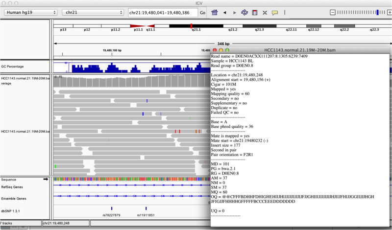
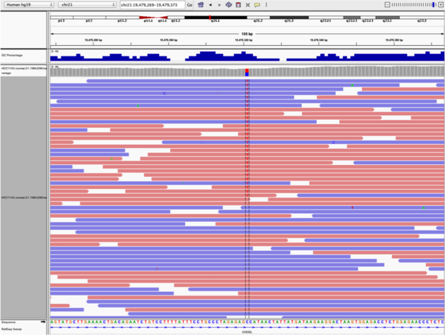

Module 2: Data Visualization with IGV
Lab
This lab was created by Sorana Morrissy, then modified by Florence Cavalli, Heather Gibling, and Rob Syme.
Introduction
Description of the lab
Welcome to the lab for Genome Visualization! This lab will introduce you to the Integrative Genomics Viewer, a powerful desktop application for viewing many kinds of genomic data, including data for DNA sequencing, RNA sequencing, microarrays, epigenetics, and copy number alteration. It is one of the most popular visualization tools for high throughput sequencing (HTS) data.
After this lab, you will be able to:
- Visualize a variety of genomic data
- Very quickly navigate around the genome
- Visualize HTS read alignments
- Validate SNP calls and structural re-arrangements by eye
Things to know before you start:
- The lab may take between 1-2 hours, depending on your familiarity with genome browsing. Don’t worry if you don’t complete the lab! It is available for you to complete later.
- There are a few thought-provoking Questions or Notes pertaining to sections of the lab. These are optional, and may take more time, but are meant to help you better understand the visualizations you are seeing.
Requirements
- Integrative Genomics Viewer
- Ability to run Java
Compatibility
This tutorial was intended for IGV v2.3 or higher, which is available on the Download page. It is strongly recommended that you use one of these versions, as older versions may not be compatible. If you have installed a former version, please uninstall it and install the latest version.
Data Set for IGV
- Chromosome 21:19,000,000-20,000,000
- HCC1143.normal.21.19M-20M.bam
- HCC1143.normal.21.19M-20M.bam.bai
Visualization Part 1: Getting Familiar with IGV
We will be visualizing read alignments using the Integrative Genomics Viewer.
First, lets familiarize ourselves with it.
The IGV Interface
Load a Genome and Data Tracks
By default, IGV loads Human hg19 as the reference genome. If you work with another version of the human genome, or another organism altogether, you can change the genome by clicking the drop down menu in the upper-left. For this lab, we’ll be using Human hg19.
We will also load additional tracks from Server (File -> Load from Server):
- Ensembl genes (or your favourite source of gene annotations)
- GC Percentage
- dbSNP 1.4.7
Note
If you are using a computer with low memory, only load the gene annotations.
Navigation
You should see listing of chromosomes in this reference genome. Click on 1, for chromosome 1.

Navigate to chr1:10,000-11,000 by entering this into the location field (in the top-left corner of the interface) and clicking Go or pressing Enter/Return on your keyboard. This shows a window of chromosome 1 that is 1,000 base pairs wide and beginning at position 10,000.

IGV displays the sequence of letters in a genome as a sequence of colours (e.g. A = green). This makes repetitive sequences, like the ones found at the start of this region, easy to identify.
You can navigate to a gene of interest by typing it in the same box the genomic coordinates are in and pressing Enter/Return. Try it for your favourite gene, or BRCA1 if you can’t decide.
Genes are represented as lines and boxes. Lines represent intronic regions, and boxes represent exonic regions. The arrows indicate the strand on which the gene lies.
When loaded, tracks are stacked on top of each other. You can identify which track is which by consulting the label to the left of each track.
Region Lists
Sometimes it’s really useful to save where you are, or to load regions of interest. For this purpose, there is a Region Navigator in IGV. To access it, click Regions > Region Navigator. While you browse around the genome, you can save some bookmarks by pressing the Add button at any time.
Loading Read Alignments
We will visualize alignments from the breast cancer cell line HCC1143. For speed, only a small portion of chr21 will be loaded (19M:20M).
HCC1143 Alignments to hg19:
Note
These are the same files listed at the top of tutorial.
Copy the files to your local drive, and in IGV choose File > Load from File, select the bam file, and click OK. Note that the bam and index files must be in the same directory for IGV to load these properly, but only the bam file (not the bam.bai file) needs to be loaded into IGV.
Visualizing Read Alignments
Navigate to a narrow window on chromosome 21: “chr21:19,480,041-19,480,386”.
IGV lets you group, sort, and color alignments to better visualize the data. To start our exploration, right click on the track name, and select the following options:
- Sort alignments by “start location”
- Group alignments by “pair orientation”
Experiment with the various settings by right clicking the read alignment track and toggling the options. Think about which would be best for specific tasks (e.g. quality control, SNP calling, CNV finding).
You will see reads represented by grey or white bars stacked on top of each other, where they were aligned to the reference genome. The reads are pointed to indicate their orientation (i.e. the strand on which they are mapped). Individual bases are only colored if they are a mismatch to the reference. The transparacy of the mismatched bases corresponds to the base quality.
Mouse over any read and notice that a lot of information is available. To toggle read display from “hover” to “click”, select the yellow box at the top of the window and change the setting.

Once you select a read, a pop-up window shows quality metrics and other information about that read.

Visualization Part 2: Inspecting SNPs, SNVs, and SVs
In this section we will be looking in detail at 8 positions in the genome, and determining whether they represent real events or artifacts.
Neighbouring Somatic SNV and Germline SNP
Navigate to position “chr21:19,479,237-19,479,814”
- Center on the SNV indicated by the red and blue coloring in the coverage track. You can center by clicking on the alignments and dragging them left or right until the SNV lines up with the black center line. (If the center line isn’t visible, turn it on by going to View -> Preferences -> Alignments -> Show center line). You can also type “chr21:19,478,749-19,479,891” into the navigation bar to center on the SNV.
- Sort alignments by “base”
- Color alignments by “read strand”. Red reads are in the forward orientation, and blue reads are in the reverse orientation.

Note
- High base qualities in all reads except one (where the alt allele is the last base of the read)
- Good mapping quality of reads, no strand bias, allele frequency consistent with heterozygous mutation
Homopolymer Repeat with Indel
Navigate to position “chr21:19,518,412-19,518,497”
- Group alignments by “read strand”
- Drag and center on the second set of “T”s
- Sort alignments by “base”
Questions:
- Is the “T” likely a valid SNV? What evidence suggests it is or isn’t?

- Now center on the one base deletion indicated by broken reads with black lines. You may have to scroll down to find these reads.
- Sort alignments by “base”

Note
- The alt allele is either a deletion or insertion of one or two “T”s
- You can see the inserted “T”s by clicking on or hovering over (depending on your settings) the purple “I”s that indicate insertions
- The remaining bases are mismatched, because the alignment is now out of sync
- (Using an older version of dbSNP (1.3.1) the entry at this location (rs74604068) is an A->T, and in all likelihood an artifact i.e. the common variants included some cases that are actually common misalignments caused by repeats. This is getting better; this entry is not present anymore in dbSNP 1.4.7!)
Coverage by GC
Navigate to position “chr21:19,611,925-19,631,555” Note that the range contains areas where coverage drops to zero in a few places.
- Use Collapsed view
- Color alignments by “insert size”
- Load GC track (if not loaded already; File -> Load from Server -> Annotations -> Sequence and Regulations -> GC Percentage)

Heterozygous SNPs on Different Alleles
Navigate to region “chr21:19,666,833-19,667,007”
- Center on the first SNV (green)
- Remove grouping by read strand and set to “none”
- Sort by base
Note
- Both SNV positions are spanned by single reads, but reads only have either one or the other, indicating that they are on different haplotypes
Low Mapping Quality
Navigate to region “chr21:19,800,320-19,818,162”
Use Collapsed view Load repeat track (from Load from Server)

Note
- Mapping quality plunges in several reads (white instead of grey). Once we load repeat elements, we see that these reads align with two LINE elements
Homozygous Deletion
Navigate to region “chr21:19,324,469-19,331,468”
- Sort reads by insert size
- Some read pairs are colored red and blue. This is different from “Color by read strand”. Red read pairs correspond to insert sizes that are larger than expected, and blue read pairs correspond to insert sizes that are smaller than expected.
- Larger (red) insert sizes can be indicative of a deletion
- Smaller (blue) insert sizes can be indicative of an insertion
- This is well explained here
- Turn on “View as Pairs” and “Expanded” view
- Click on a red read pair to pull up information on alignments

Note
- Typical insert size of read pair in the vicinity: 350bp
- New insert size of red read pairs: 2,875bp
- This corresponds to a homozygous deletion of 2.5kb
Mis-Alignment
Navigate to region “chr21:19,102,154-19,103,108”
- Turn on “View as Pairs” and “Expanded” view
- Group alignments by “Pair orientation”
- Color alignments by “Insert size and pair orientation”
- “Insert size” also colors reads when a mate is mapped to a different chromosome. Each chromosome has its own color, as described here

Note
- This is a position where an AluY element causes mis-alignment
- Misaligned reads have several mismatches to the reference and
- Well-aligned reads have partners on other chromosomes where additional AluY elements are encoded. You may need to scroll down to see this reads
Translocation
Navigate to region “chr21:19,089,694-19,095,362”
- Expanded view
- Group by “Pair orientation”
- Color alignments by “Insert size and pair orientation”
- “Pair orientation” colors read pairs when they are not in the expected left-right (LR) orientation. This is well explained here
Note
- Many reads with mismatches to reference
- Read pairs in RL pattern (instead of LR pattern)
- Region is flanked by reads with poor mapping quality (white instead of grey)
- Presence of reads with pairs on other chromosomes (coloured reads at the bottom when scrolling down)
Visualization Part 3: Automating Tasks in IGV (Optional)
We can use the Tools menu to invoke running a batch script. Using a batch script, you can automatically load your data, go to a particular location, set some display options and take a snapshot. This can be useful when you want to inspect many variant calls.
Batch scripts are described on the IGV website:
We also need to provide a sample attribute file as described here.
Download the batch script and the attribute file for our dataset:
Batch script: Run_batch_IGV_snapshots_example.txt Attribute file: igv_HCC1143_attributes.txt
After downloading those two files, open Run_batch_IGV_snapshots_example.txt in a text editor and update the paths for the bam file and the output directory (indicated as **** in the file) to your directories. The batch script will not run if these paths are not updated because these default directories do not exist on your computer.
Now run the file from the Tools menu:
- Tools -> Run Batch Script
- Select Run_batch_IGV_snapshots_example.txt and click Open.
- IGV will automatically switch to thse regions specified in the batch script. Wait until the cursor returns to an arrow to use IGV again.
The IGV screenshots are in the screenshots output directory you set. Have a look!
Visualization Part 4: Visualizing Long Reads
Long reads aligned to a reference genome can be visualized like short reads, but true variants might be hard to find among the noise from increased sequencing error rates in long-read sequencing technologies. We will view some reads obtained from Oxford Nanopore sequencing provided by Miten Jain from the recent publication Nanopore sequencing and assembly of a human genome with ultra-long reads.
Before getting started, remove the tracks for HCC1143.normal.21.19M-20M.bam (both the alignment track and the coverage track). We will be using a different reference genome, so these reads will no longer be properly aligned. Change the reference genome in the top left corner to Human (hg38). If this option isn’t available you will need to download it. Selct More, then scroll down and select Human hg38.
Data for long reads:
- Chromosome 21: 19,000,000-20,000,000
- NA12878.21.19M-20M.bam
- NA12878.21.19M-20M.bam.bai
Copy the files to your local drive, and in IGV choose File > Load from File, select the bam file, and click OK. Note that the bam and index files must be in the same directory for IGV to load these properly, but only the bam file (not the bam.bai file) needs to be loaded into IGV.
Cleaning up Sequencing Error Noise
Navigate to position “chr21:19,479,237-19,479,814”
- Load the Common SNPs track from server (File -> Load from Server -> Annotations -> Common Snps 1.4.2)
Question:
- What does the abundance of dashed lines and purple “I”s tell us about the types of errors produced by nanopore sequencing?
Hide small indels to better view the alignments:
- Go to View -> Preferences -> Alignments and enter a small number for Hide indels < (e.g., 20)
- Most of the indels should now be removed.
Generate a consensus sequence to hide substitution errors:
- Go View -> Preferences -> Alignments and select Quick consensus mode
Viewing Variants
Scroll around and see if you can find a plausible SNV.
- What information are you using as evidence for this SNV?
Now navigate to position “chr21:19,790,758-19,790,965”
Note
- The reads here all have a deletion indicated by thin black bars splitting up parts of the reads. It would seem as though this is evidence for a deletion in this sample at this position
- However, look at the reference sequence at the deletion–it is all red, indicating “T”s! You can zoom in to confirm
- Nanopore sequencing is prone to deletions at homopolymer repeats, or stretches of a single base, as seen here. Therefore this is likely a sequencing artifact and not a true deletion
Question:
- Some of the coloring options we used for viewing the previous sample (HCC1143) are not available for this NA12878 bam, such as View as pairs and Color alignments by insert size and pair orientation. Why is this?
Lab Complete!
You’re done Module 2! We hope that you enjoyed the lab and that you continue to enjoy IGV.
Lab Answers
Suggested Answers
Below are suggested answers to the questions from lab 2. You might have thought of additional reasons and answers!
Visualization Part 2: Inspecting SNPs, SNVs, and SVs
Neighbouring Somatic SNV and Germline SNP
Questions:
- What does “Shade base by quality” do? How might this be helpful?
- Distinguishes high-quality bases from lower quality bases. If the T alternate allele was predominantly light/transparent, we wouldn’t be very confident that it is a probable SNV. The only light-colored T in this example is at the very end of a read, where base quality is generally lower.
- How does “Color by read strand” help?
- Lets us see that the T alternate allele is present on both forward and reverse sequencing reads. If it was present on only forward reads or only reverse reads, that could indicate a sequencing artifact as opposed to a probable SNV.
Homopolymer Repeat with Indel
Question:
- Is the “T” likely a valid SNV? What evidence suggests it is or isn’t?
- Probably not. 6/36 reads show a T at this positition (numbers obtained by clicking/hovering on the coverage track block at this position), and 4 of those 6 are light colored (low quality). Additionally, only forward (red) reads have the T alternate allele, indicating a strand bias sequencing error.
Coverage by GC
Question:
- Does the coverage correspond to the GC content?
- Yes! Read coverage is low where GC content of the reference genome is very low (and also very high, but in these data the low coverage effect is easier to see). Seqeuencing technologies are not perfect and have biases, meaning not all regions of the genome are covered equally. You can read more about the effect of GC content on short-read sequencing coverage here.
Low Mapping Quality
Question:
- Why do LINE elements affect mapping quality?
- LINEs (long interspersed nuclear elements) are retrotransposons found throughout the genome. Because these sequences are repeated in many different locations, when a read aligns to part of this sequence, it can often map equally well to multiple locations in the genome. This is not helpful, so aligners generally give low mapping quality scores reads that do not map uniquely to one location (i.e. 0; the reads will also be white instead of grey in IGV).
Visualization Part 4: Visualizing Long Reads
Viewing Variants
Question:
- Some of the coloring options we used for viewing the previous sample (HCC1143) are not available for this NA12878 bam, such as View as pairs and Color alignments by insert size and pair orientation. Why is this?
- Nanopore sequencing doesn’t do paired read sequencing! Instead, long fragments of DNA are pulled through pores and are sequenced until the end of the fragment (or until the pore wears out). Reads are considered to be independent from each other in this regard. This is different from short-read sequencing platforms like Illumina that sequence both ends of a DNA fragment but are usually unable to sequence the middle segment.